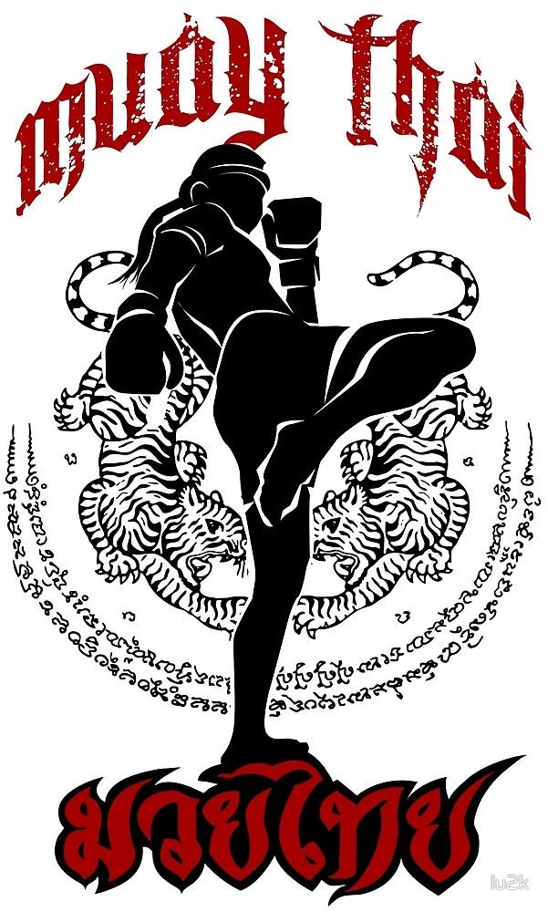
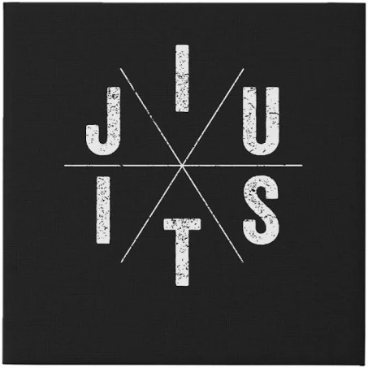
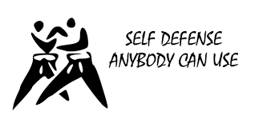

Muay Thai
Muay Thai developed from the traditional martial art of Muay Boran in Thailand sometime in the 1930's. Nicknamed "the art of eight limbs", Muay Thai utilizes striking combinations that consists of punches, kicks, knees, and elbows
along with clinch grappling. This martial art is common in sport fighting as it is utilized by a high number of mixed martial artists and kickboxers worldwide. It also an effective martial art to practice for self-defense.

Brazilian Jiu Jitsu (BJJ)
BJJ was developed near 1920 by the Gracie brothers. Originally called Gracie Jiu Jitsu, BJJ has grown in popularity due to its use in sport fighting as well as one of the stronger self-defense techniques. BJJ is essentially a grappling
martial art that emphasizes submissions and sweeps from the bottom position. BJJ is great for people of any age or skill level.

Self-Defense
Self-defense is a term used to describe many techniques that will help you out of a bad situation. Many gyms teach self-defense as its own martial art, but at Hybrid Fitness, we will teach you techniques from different martial arts and\
how to combine those techniques to ensure you are a formidable foe to anyone who seeks to cause you harm.